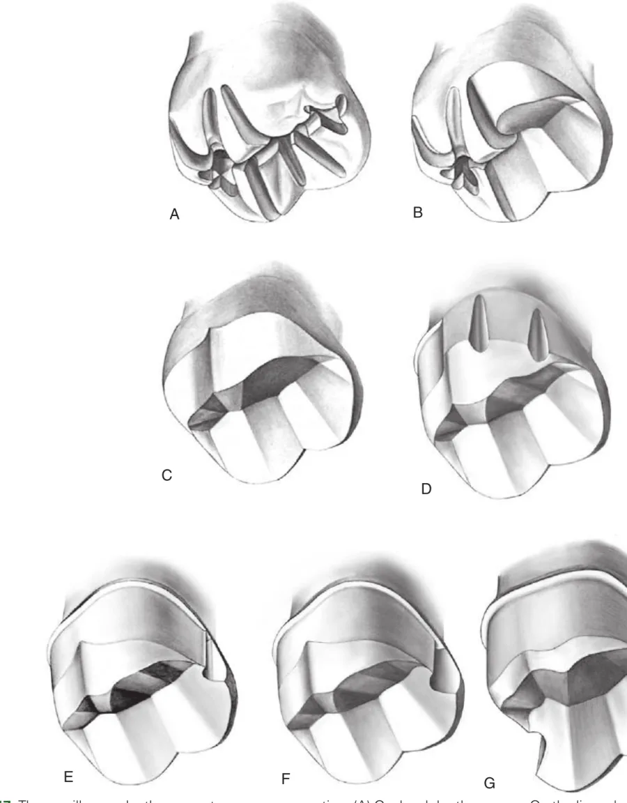

نسخه استخراجشده؛ ترجمه یا تأیید علمی انجام نشده است. وضعیت: captured
تفاوت بنیادی با روکش کامل: «جز یک بِوِل باریک یا لبهی چمفر که در امتداد زاویهی خط بوکو-اکلوزال گذاشته میشود، سطح باکال پایه دستنخورده میماند. سایر سطوح — از جمله سطح اکلوزال — به همان شیوهی تراش روکش کامل آماده میشوند، و تنها در نیاز به شیارهای محوری پروگزیمال برای توسعهی فرم مقاومت فرق میکنند.»
و اعداد کلیرنس، که همان اعداد روکش کاملاند: «کلیرنس روی کاسپ فانکشنال باید دستکم ۱٫۵ میلیمتر، و روی کاسپ نانفانکشنال و در شیار مرکزی دستکم ۱٫۰ میلیمتر باشد.» و همزمان: «دندان باید طوری تراشیده شود که نمایش فلز حداقلی باشد؛ فرم اوتلاین اصلی دیوارهی باکال باید تا جای ممکن حفظ شود.»
و نخستین گام، که غیرمنتظره است: «پیش از شروع تراش، محل پیشنهادی لبهی ترمیم کاملشده را روی دندان با مداد علامت بزن.» — یعنی در پارسیل ونیر، جای لبه پیش از نخستین فرز تصمیم گرفته میشود.
و اعداد شیارهای عمق: چالههای اولیه تقریباً ۰٫۸ میلیمتر در فوسای مزیال و دیستال. در شیار مرکزی، شیارها «باید کمی کمعمق نگه داشته شوند تا برای پرداخت جا باشد»؛ و روی کاسپ فانکشنال (لینگوال) «باید کمی کمتر از ۱٫۵ میلیمتر عمق داشته باشند در محل تماسهای اکلوزال».
و سه شیار روی شیب لینگوالی کاسپ باکال: «ابتدا باید تا حدی کمعمق نگه داشته شوند هرچه به ریج کاسپ باکال نزدیک میشوند.» و «در ناحیهی تماس اکلوزال، عمق شیار باید دستکم ۱ میلیمتر کلیرنس پس از پرداخت را جا دهد».
و ترفند کلیدی این تراش — تراش مقعر (hollow grinding): «تراش مقعر شیب لینگوالی کاسپ باکال برای به دست آوردن کلیرنس کافی، در حالی که بُعد اکلوزو-سرویکالی اصلی سطح باکال دندان حفظ میشود، کمککننده است.»
و چرا این ترفند اهمیت دارد: نتیجهاش «شکل محدب ترمیم» است و «نور از بازتاب به سمت بینندهی معمولی بازداشته میشود. بدین ترتیب ترمیم کمتر آشکار است، و فرم اوتلاین مینای باکال باقیمانده بهعنوان شکل دندان درک میشود.» — یعنی یک تصمیم هندسی که مسئلهی زیبایی را حل میکند.
و تأیید نهایی: عمق شیار را با پروب پریودنتال تأیید کن، و مقدار کلیرنس اکلوزال را «در ماکزیمم اینترکاسپیشن و در همهی حرکات اکسکورسیو مندیبل» ارزیابی کن.

شیارهای همترازی: «در مرکز سطح لینگوال و در زوایای خط انتقالی مزیولینگوال و دیستولینگوال. اینها موازی محور طولی دنداناند و ابتدا باید کمعمق نگه داشته شوند تا ناخواسته لب مینای بدون حمایت در لبه ایجاد نشود.»
و یک هشدار که مختص پارسیل ونیر است: «چون مسیر نشست یک پارسیل ونیر حیاتی است، شیارهای جهتیابی باید در زمانی که اصلاح هنوز عملی است بهطور نقادانه ارزیابی شوند.» و ابزار این ارزیابی: ریختن قالب آلژینات با گچ زودگیر و ارزیابی کست با سرویور دندانی — «این بهویژه مفید است اگر چند پارسیل ونیر بهعنوان نگهدارندهی یک پروتز ثابت به کار میروند».
و چرا این نکته در پارسیل ونیر حادتر از روکش کامل است: در پارسیل ونیر «تنها تنظیمهای محدودی در مسیر نشست میتوان انجام داد». خطای رایج این است که مسیر نشست به سمت باکال کج شود؛ این کار گیر را کم میکند، فلز بیشتری نمایش میدهد، یا هر دو. پس پروب پریودنتال را در هر شیار بگذار و آن را هم از نمای مزیودیستالی و هم از نمای باکولینگوالی نگاه کن.
و اجرای کاهش محوری: «پس از تأیید همترازی و در صورت لزوم اصلاح، ساختار دندانی میان شیارهای جهتیابی با یک حرکت صاف و پیوسته برداشته میشود، همزمان با توسعهی یک لبهی چمفر سرویکالی.»
و مهمترین بخش این درس — رابطهی میان کاهش محوری اولیه، جای شیار و محل زاویهی کاووسورفیس، که محل نهایی لبهی باکال را تعیین میکند:
و یک متغیر ظریف که بهآسانی نادیده گرفته میشود: «هرچه لبهی چمفر سرویکالی نزدیکتر به محل اتصال مینا-سمانی گذاشته شود، ساختار محوری بیشتری به دلیل شکل آناتومیک طبیعی پایه باید برداشته شود. در نتیجه، عمیقترین بخش شیار (دیوارهی پالپیاش) کمی نزدیکتر به مرکز مزیودیستالی دندان قرار میگیرد. این به فلری میانجامد که دورتر روی سطح باکال امتداد مییابد از آنچه مطلوب است.»
و راهحل عملی: «علامت زدن محل برنامهریزیشدهی فلر فاسیال موردنظر روی دندان با مداد استریل، پیش از آغاز کاهش پروگزیمو-محوری، کمککننده است. تقاطع این علامت با سطح پروگزیمال کاهشیافته، یک نقطهی مرجع سودمند است.»
و کجا کاهش پروگزیمال را متوقف کنی: «کاهش پروگزیمال را خوب پیش از علامت مداد و معمولاً کمی پیش از شکستن تماس پروگزیمال متوقف کن.»
و مشخصات فلانج حاصل: «باید موازی تراش لینگو-محوری باشد، با لبهی چمفر که بهاندازهی کافی سرویکالی گذاشته شده تا دستکم ۰٫۶ میلیمتر کلیرنس با دندان مجاور و ارتفاع کافی دیوارهی محوری فراهم کند، تا جایگذاری بعدی یک شیار پروگزیمال با طول دستکم ۴ میلیمتر اکلوزو-سرویکالی ممکن شود.»